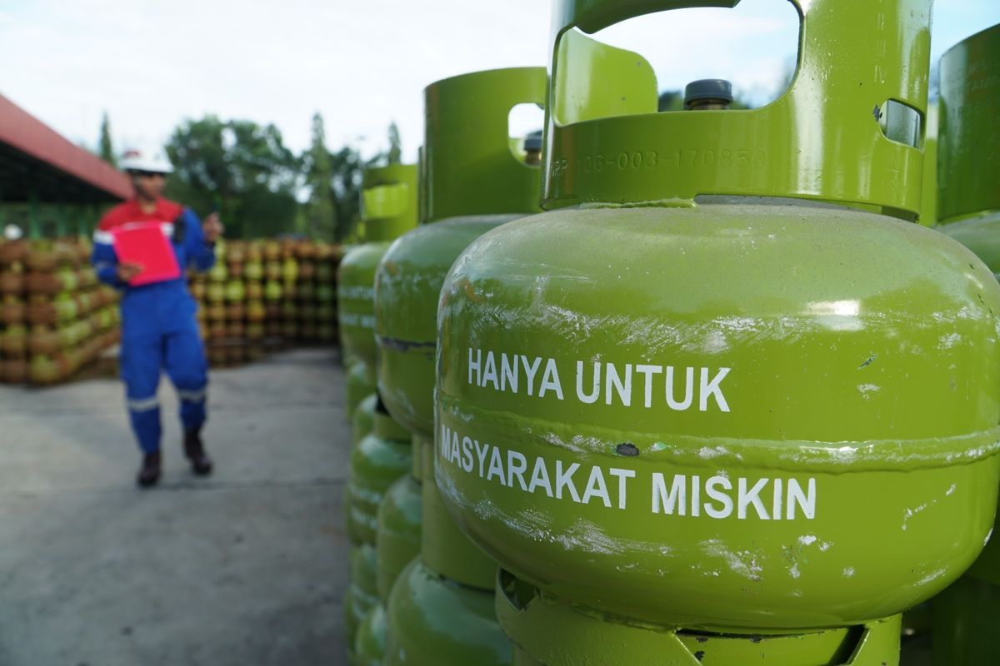
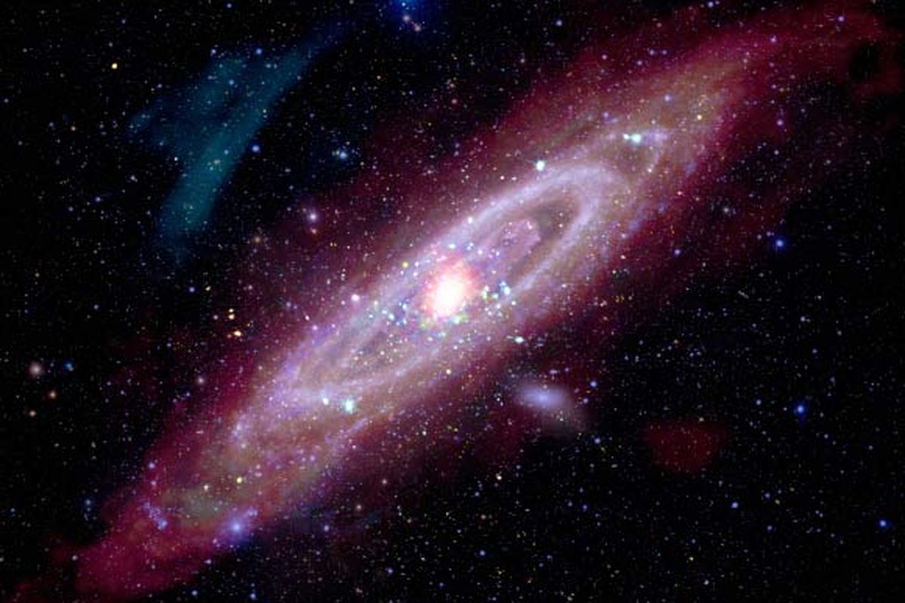

Perbandingan Harga BBM, Elpiji, dan Listrik Sebelum dan Setelah Disubsidi
Berikut perbandingan harga BBM, elpiji, dan listrik sebelum serta sesudah subsidi diberlakukan.
Setelah subsidi, harga-harga mengalami perubahan yang mempengaruhi daya beli masyarakat.
Selengkapnya...
Galaksi Andromeda Capai Titik Tertinggi pada 2 Oktober, Bisa Dilihat dengan Mata Telanjang
Pada tanggal 2 Oktober, Galaksi Andromeda akan berada pada posisi tertinggi di langit bumi.
Waktu terbaik untuk melihatnya tanpa teleskop akan datang pada malam tersebut.
Selengkapnya...
|


|